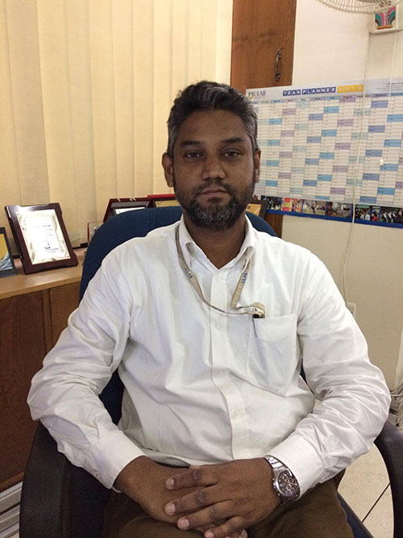

Quick Links
Testimonials
Rezwan Akhter
Health Management Information System Consultant, & Unicef
 ULAB was a golden period of my life. I had the opportunity to meet great faculty members, use state-of-the-art lab facilities, enjoy excellent educational resources and also participate in diverse co-curricular activities. The well-structured GED courses and the chances to take minor or optional courses from other departments truly reflect the notion that ULAB is ‘liberal’. I had the chance to participate in many events which helped shape me as a professional, and also improved my interpersonal …
ULAB was a golden period of my life. I had the opportunity to meet great faculty members, use state-of-the-art lab facilities, enjoy excellent educational resources and also participate in diverse co-curricular activities. The well-structured GED courses and the chances to take minor or optional courses from other departments truly reflect the notion that ULAB is ‘liberal’. I had the chance to participate in many events which helped shape me as a professional, and also improved my interpersonal …

ULAB was a golden period of my life. I had the opportunity to meet great faculty members, use state-of-the-art lab facilities, enjoy excellent educational resources and also participate in diverse co-curricular activities. The well-structured GED courses and the chances to take minor or optional courses from other departments truly reflect the notion that ULAB is ‘liberal’.
Sifat E Shehrin Arin
- Computer Science and Engineering
ULAB was a golden period of my life. I had the opportunity to meet great faculty members, use state-of-the-art lab facilities, enjoy excellent educational resources and also participate in diverse co-curricular activities. The well-structured GED courses and the chances to take minor or optional courses from other departments truly reflect the notion that ULAB is ‘liberal’.
Khaled Saifullah
Junior Software Developer of Multimedia Content & Communication Ltd. (MCC)
Vision
To produce highly competent graduates who will become leaders in Computer Science and Engineering.
 Welcome to the Department of Computer Science and Engineering at ULAB. CSE is an extremely dynamic, fast paced, ever changing field. ULAB CSE will equip you with the skills and tools necessary to be always at the top of your game. Along with these, you will pick up an attitude of continuous self improvement. The curricular teaching is supported and enhanced by constant interaction with the ICT industry.We have extremely qualified faculties with PhDs from all around the world including USA, UK, Australia, Japan and Europe. I am very proud of the fact that our students are in good positions in jobs at both home and abroad. Many of our alumni are also pursuing their postgraduate degrees at well-reputed universities all around the world.As you embark upon your university life, we would like to wish you the very best.Hope to see you at ULAB CSE.
– Dr. A.K.M. Muzahidul Islam
Head, Department of Computer Science and Engineering
The Department of Computer Science and Engineering strives for graduating highly competent students with the potential of becoming the leaders in their field and also to impart knowledge which allows them to understand the implications of their work on both to themselves as well to the society as a whole.
Department of Computer Science and Engineering at ULAB, since its inception, has been offering an undergraduate program in Computer Science and Engineering with focus on developing skills for ICT industries worldwide. The designed program provides students with fundamental skills needed to become an accomplished IT specialist. The program also aims at a wider knowledge of the subject, rather than a mere understanding of the existing commercial approaches. The degree is designed for a wide range of students, including those who wish to pursue a career in software engineering, computer programming or related areas, and also those who wish to move on to study for higher degrees in the computing and information technology areas, either at home or abroad.
The department believes in a philosophy of Active Learning which is reflected in our curriculum and teaching styles. The Computer Science and Engineering (CSE) curriculum has been designed with both theoretical and industry oriented courses. The department provides state of the art laboratory facilities, with guidance from the top notch faculties, to bring out the best from the students. Departmental active collaboration with local and international reputed companies is keeping both CSE students and faculty updated with industry innovations and requirements. In their last academic year, students will be able to choose a concentration area or any other elective courses to focus their career according to their interest. Furthermore, the Liberal Arts curricular framework will help the students to acquire an openness of vision to become adaptable and ever-effective professionals of this century and for the time to come. The program objectives address our goal of graduating highly competent students with a potential of becoming leaders in their careers and add value to the society.
Department of Computer Science and Engineering at ULAB, since its inception, has been offering the undergraduate program in Computer Science and Engineering with more focus on the ICT industries worldwide. The designed program delivers the fundamental skills needed to become a Computer Scientist. The program also aims to a wider knowledge of the subject, rather than just an understanding of existing commercial approaches, so that the student’s understanding and knowledge can adapt and evolve to match the skills that will be required in the coming century.
- Quality teaching and learning environment
- Industry Academia Collaborations
- Incubation of real-life developments with ICT industries
- Partnership with ICT Leaders both at home and abroad
- Research and developments
- ICT4D activities
- Develop course curricula based on industry requirements
- Deliver course lessens with industry focus
- Nurture creativity and innovations
- Joint research initiatives with the ICT industry
| Total course requirements for degree program are as follows: | |
| General Education Course | 10 courses (30 credits) |
| Major Core | 24 courses (79 credits) |
| Major Elective | 04 courses (12 credits) |
| Project/Thesis | 01 courses (04 credits) |
| Optional/Minor | 05 courses (15 credits) |
| Total | 44 courses (140 credits) |
Bachelor of Science, Computer Science and Engineering (CSE) Faculty
Prof. H.M. Jahirul Haque, PhD
Prof. Shorif Uddin, PhD
Prof. Sazzad Hossain, PhD
A K M Muzahidul Islam, PhD
T. M. Abul Kalam Azad
Saugata Bose